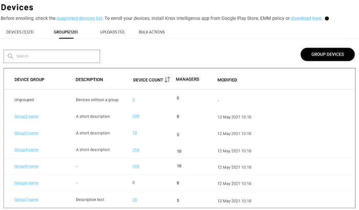

Manage devices
Last updated November 23rd, 2023
On this tab
Tip
In the search bar at the top, enter a device IMEI to view the device’s info across all the Knox services it’s enrolled in. For dual-SIM devices, both IMEIs are supported.
Device information
The Devices page is where you can perform all device-related actions.

The device list contains the following information. The table can be customized by clicking the table menu icon (…) and selecting table columns to display, up to a maximum of 7.
DEVICE ID — The device’s unique identifier. If the device supports two SIMs, only the primary IMEI (IMEI1) is shown, but you can search for the device using either IMEI.
DEVICE GROUP — The name of the group the device belongs to.
MODEL — The device’s model code.
STATUS — The current status of the device.
PERMISSIONS — Indicates whether the device user has granted location permissions. If the device does not have location permissions, you can send a permission notification by clicking ACTIONS > Send permission notification.
Important
If your devices are running Android 12 or higher, permissions are granted differently based on your device management mode.
- For device owner (DO) deployments, EMMs can pre-grant location permissions during enrollment.
- For work profile on company-owned device deployments, device users must manually grant location permissions through an alert in the notification panel before Knox Asset Intelligence can collect location data from the device. If the user denies location permissions, then Wi-Fi and location data can’t be collected from their device.
BATTERY STATUS — The device’s current battery status.
BATTERY SOH — The overall health of the device’s battery.
Click a DEVICE ID to bring up a sliding panel with extended details, including a device summary, app, battery, and Wi-Fi connection information, as well as device logs. If a device hasn’t reported new data to the Knox servers yet, you might not see some of these details in the console. As an example scenario, app information would be unavailable for a device if said device hasn’t reported any app usage data. You can also search for a device or group by entering a device ID or group name in the search bar.
Uploads
The Uploads tab shows any Samsung devices you’ve purchased from a reseller, after the reseller uploads them to your console. On this tab, you can approve the uploads and add the devices to your device list. Ensure you’ve registered your reseller in the Knox Asset Intelligence console beforehand.
Bulk upload or delete devices
If your devices were not purchased from a reseller, you can use a CSV file to manually upload or delete devices from Knox Asset Intelligence. To do so:
- In the navigation pane, click Devices.
- In Devices screen, click the BULK ACTIONS tab.
- Click UPLOAD DEVICES or DELETE DEVICES to take either action. You can also find CSV instructions underneath the bulk action options.
- In the BULK ACTIONS, select UPLOAD DEVICES or DELETE DEVICES depending on whether you chose to upload or delete devices.
- In the dialog that’s shown, download the CSV template. In the template, enter one device IMEI per line (up to a maximum of 10 000 devices), then save your file.
- Go back to the dialog in the Knox Asset Intelligence console. Under Select .csv file*, click BROWSE to locate your CSV file in the file explorer.
- After selecting your file, click SUBMIT.
In the top-right corner, a notification confirms that your devices were uploaded or deleted successfully.
Groups
Knox Asset Intelligence offers a GROUPS tab where you can view and manage your device group information.

The GROUPS list displays the following info:
- DEVICE GROUP — The name of the device group. Click a group name to open a sliding panel with fields to edit the group description and the list of managers.
- DESCRIPTION — A short phrase describing the group. For long descriptions, hover over the truncated description to see the full text.
- DEVICE COUNT — The number of devices in the group. Click a number to go to a filtered list of devices belonging to that group.
- MANAGERS — The number of managers assigned to the group, who are admins with permission to manage groups. Managers can receive alert emails when Wi-Fi or app stability events exceed the thresholds set for the device group.
- MODIFIED — The date and time the group was last edited.
There are two ways to upload device group information to Knox Asset Intelligence:
- Using existing group IDs from an EMM
- Through a CSV upload
Important
If you use both methods to upload device group information, the EMM group information supersedes the CSV upload.
Using existing group IDs from an EMM
For organizations using VMware Workspace ONE UEM
Caution
If you modify or delete a group in your EMM after uploading a CSV file, your Knox Asset Intelligence group data may be affected.
Knox Asset Intelligence supports dynamically-generated group IDs, also referred to as lookup fields, that simplify the group syncing experience between Knox Asset Intelligence and VMware Workspace One UEM. Workspace ONE UEM provides lookup values that can be used instead of static group ID values, which represent an element of the device or user that you might not normally have access to.

For example, you might want to group several Galaxy XCover Pro devices together in Knox Asset Intelligence. Instead of creating a dedicated group in Workspace ONE UEM, you can select device model as a lookup field to find all XCover Pro devices in your fleet, which then auto-syncs to Knox Asset Intelligence as a device group.
Refer to VMware’s documentation for a full list of supported lookup values.
Tip
You can also create Custom Lookup Fields using regular expressions, which let you assign friendly names to your lookup fields. Learn more in the VMware documentation.
On the Workspace ONE UEM console, once you define a standard or custom lookup field for group IDs, enter it in the Application Configuration menu for the Knox Asset Intelligence agent. Doing so sets the lookup field as a dynamically-generated group ID for each device. Note that the application configuration is pushed through Managed Google Play.

Once the application configuration is pushed to the enrolled devices, the Knox Asset Intelligence agent receives the group ID through VMware Hub and automatically assigns the device to the designated group. You can then see the device group and assignment on the Knox Asset Intelligence console.

For organizations using other EMMs
In other EMMs that don’t support lookup fields, you can manually enter group IDs in the application configuration section.
Through a CSV upload
If your devices aren’t grouped through an EMM or you prefer to manually define your device groups, you can upload a CSV file containing device IDs and group names to the Knox Asset Intelligence console.
To group devices:
- In the left sidebar of your Knox Asset Intelligence console, click Devices.
- On the Devices screen, select the GROUPS tab.
- To the right of the search bar, click GROUP DEVICES.
- On the Device grouping screen, download the CSV template. Enter a device IMEI and a venue name per line in the template (up to a maximum of 10,000 devices), then save your file.
- Under Select .csv file*, click BROWSE to locate your CSV file in the file explorer.

- After selecting your file, click SUBMIT.
If one or more of your devices can’t be enrolled, a notification is shown in the top-right corner with a download link to a CSV file containing error details.
This document was updated for the Knox cloud services 23.12 UAT.
On this tab
The Devices page is where you can go to view important information about your device fleet, create device groups, approve reseller-uploads, and perform bulk actions like deleting multiple devices and changing auto-enrollment options.
Devices tab
When you navigate to the Devices page from the left navigation pane, you’ll land on the default Devices tab. Here, you can view helpful information like each device’s OS versions, firmware version, enrollment status, battery status, and more.
Devices table
You can customize the columns in the Devices table by clicking the table options (…) button and selecting the columns you want to display. By default, the DEVICE ID column is always visible, but you can add up to 6 additional data columns to the table. The following data columns are available:
| Column | Description |
|---|---|
| DEVICE ID | The device's unique identifier (always enabled). If the device supports two SIMs, only the primary IMEI is shown. |
| DEVICE GROUP | The name of the group the device belongs to. If the device does not belong to a group, status is Ungrouped. |
| MODEL | The device's model code. |
| STATUS | The current status of the device. The possible statuses are:
|
| PERMISSIONS | Indicates whether the device user has granted location permissions. If the device does not have location permissions, you can send a permission notification by clicking ACTIONS > Send permission notification. Important If your devices are running Android 12 or higher, permissions are granted differently based on your device management mode.
|
| BATTERY STATUS | The device's current battery status. |
| BATTERY SOH | The overall health of the device's battery. |
Expanded device details
Click a DEVICE ID to display a sliding panel with expanded device details. In the SUMMARY section, you’ll see all available device information including secondary IMEI numbers (for dual SIM models), unique device tags, license keys, and other helpful information not available in the Device table options.
The expanded device details panel also provides a quick summary of your app, battery, and Wi-Fi connection insights in the separate APPS, BATTERY, and WI-FI sections, letting you quickly view important health and status information without needing to switch over to the Dashboard page. To help troubleshoot issues with a specific device, you can click VIEW DEVICE LOG to get a history of the device’s activity. From the Device log page, you can click DOWNLOAD LIST to get a CSV copy of the entire log for further analysis.

Device actions
You can perform device-specific actions like sending Diagnostic device logs requests, sending Device snapshots requests, unenrolling and deleting devices, and more. To perform an action, select one or more devices, then click ACTIONS and select the type of action you want to perform.
Uploads tab
The Uploads tab shows any Samsung devices you’ve purchased from a reseller, after the reseller uploads them to your console. On this tab, you can approve the uploads and add the devices to your device list. Ensure you’ve registered your reseller in the Knox Asset Intelligence console beforehand.
Bulk upload or delete devices
If your devices were not purchased from a reseller, you can use a CSV file to manually upload or delete devices from Knox Asset Intelligence. To do so:
- In the navigation pane, click Devices.
- In Devices screen, click the BULK ACTIONS tab.
- Click UPLOAD DEVICES or DELETE DEVICES to take either action. You can also find CSV instructions underneath the bulk action options.
- In the BULK ACTIONS, select UPLOAD DEVICES or DELETE DEVICES depending on whether you chose to upload or delete devices.
- In the dialog that’s shown, download the CSV template. In the template, enter one device IMEI per line (up to a maximum of 10 000 devices), then save your file.
- Go back to the dialog in the Knox Asset Intelligence console. Under Select .csv file*, click BROWSE to locate your CSV file in the file explorer.
- After selecting your file, click SUBMIT.
In the top-right corner, a notification confirms that your devices were uploaded or deleted successfully.
Groups
Knox Asset Intelligence offers a GROUPS tab where you can view and manage your device group information.
The GROUPS list displays the following info:
| Field | Description |
|---|---|
| DEVICE GROUP | The name of the device group. Click a group name to open a sliding panel with fields to edit the group description and the list of managers. |
| DESCRIPTION | A short phrase describing the group. For long descriptions, hover over the truncated description to see the full text. |
| DEVICE COUNT | The number of devices in the group. Click a number to go to a filtered list of devices belonging to that group. |
| MANAGERS | The number of managers assigned to the group, who are admins with permission to manage groups. Managers can receive alert emails when Wi-Fi or app stability events exceed the thresholds set for the device group. |
| MODIFIED | The date and time the group was last edited. |
There are two ways to upload device group information to Knox Asset Intelligence:
- Using existing group IDs from an EMM
- Through a CSV upload
Important
If you use both methods to upload device group information, the EMM group information supersedes the CSV upload.
Using existing group IDs from an EMM
For organizations using VMware Workspace ONE UEM
Caution
If you modify or delete a group in your EMM after uploading a CSV file, your Knox Asset Intelligence group data may be affected.
Knox Asset Intelligence supports dynamically-generated group IDs, also referred to as lookup fields, that simplify the group syncing experience between Knox Asset Intelligence and VMware Workspace One UEM. Workspace ONE UEM provides lookup values that can be used instead of static group ID values, which represent an element of the device or user that you might not normally have access to.
For example, you might want to group several Galaxy XCover Pro devices together in Knox Asset Intelligence. Instead of creating a dedicated group in Workspace ONE UEM, you can select device model as a lookup field to find all XCover Pro devices in your fleet, which then auto-syncs to Knox Asset Intelligence as a device group.
Refer to VMware’s documentation for a full list of supported lookup values.
Tip
You can also create Custom Lookup Fields using regular expressions, which let you assign friendly names to your lookup fields. Learn more in the VMware documentation.
On the Workspace ONE UEM console, once you define a standard or custom lookup field for group IDs, enter it in the Application Configuration menu for the Knox Asset Intelligence agent. Doing so sets the lookup field as a dynamically-generated group ID for each device. Note that the application configuration is pushed through Managed Google Play.
Once the application configuration is pushed to the enrolled devices, the Knox Asset Intelligence agent receives the group ID through VMware Hub and automatically assigns the device to the designated group. You can then see the device group and assignment on the Knox Asset Intelligence console.
For organizations using other EMMs
In other EMMs that don’t support lookup fields, you can manually enter group IDs in the application configuration section.
Through a CSV upload
If your devices aren’t grouped through an EMM or you prefer to manually define your device groups, you can upload a CSV file containing device IDs and group names to the Knox Asset Intelligence console.
To group devices:
- In the left sidebar of your Knox Asset Intelligence console, click Devices.
- On the Devices screen, select the GROUPS tab.
- To the right of the search bar, click GROUP DEVICES.
- On the Device grouping screen, download the CSV template. Enter a device IMEI and a venue name per line in the template (up to a maximum of 10,000 devices), then save your file.
- Under Select .csv file*, click BROWSE to locate your CSV file in the file explorer.
- After selecting your file, click SUBMIT.
If one or more of your devices can’t be enrolled, a notification is shown in the top-right corner with a download link to a CSV file containing error details.
Is this page helpful?